Scenario and Objectives
A document intake process needs immediate notification when a file arrives. The workflow records event metadata in a separate container for later audit and downstream processing.
- Create an Event Grid-triggered workflow.
- Filter events to one source container.
- Extract event metadata and write an audit artifact.
- Trace the event from storage through run history.
Architecture
flowchart LR U[Upload file] --> I[Incoming container] I --> E[Event Grid blob-created event] E --> L[Logic App workflow] L --> A[Audit container] L --> H[Run history] classDef azure fill:#e6f2fb,stroke:#0078d4,stroke-width:2,color:#0f1722; classDef result fill:#e7f5e7,stroke:#107c10,stroke-width:2,color:#103010; class U,I,E,L azure; class A,H result;
Prerequisites and Names
- Permission to create Storage, Event Grid subscriptions, API connections, and a Consumption logic app.
- A region that supports the selected services.
- The Microsoft.EventGrid resource provider registered in your subscription.
Verify Event Grid Resource Provider Registration
- Sign in to the Azure portal, search for Subscriptions, and open it.
- Select the subscription you will use for this lab. Registration applies to the subscription, not an individual resource group.
- In the subscription menu, under Settings, select Resource providers.
- In the filter box, enter
Microsoft.EventGridand check its Status. - If the status is Registered, no change is needed. If it is NotRegistered, select Microsoft.EventGrid and then select Register.
- If the status is Registering, registration is still in progress. Use Refresh to check again and confirm that the status becomes Registered before continuing with this lab.
/register/action permission at subscription scope, included in the Contributor and Owner roles. Contributor access only to a resource group is not sufficient. If registration is unavailable or denied, ask your subscription administrator to register Microsoft.EventGrid. See Register an Azure resource provider.| Resource | Suggested name |
|---|---|
| Logic app | la-blob-events-<suffix> |
| Storage account | stlaevents<suffix> |
| Source container | incoming |
| Output container | audit |
Prepare Resources
- Create a general-purpose v2 storage account with Event Grid support.
View screenshot
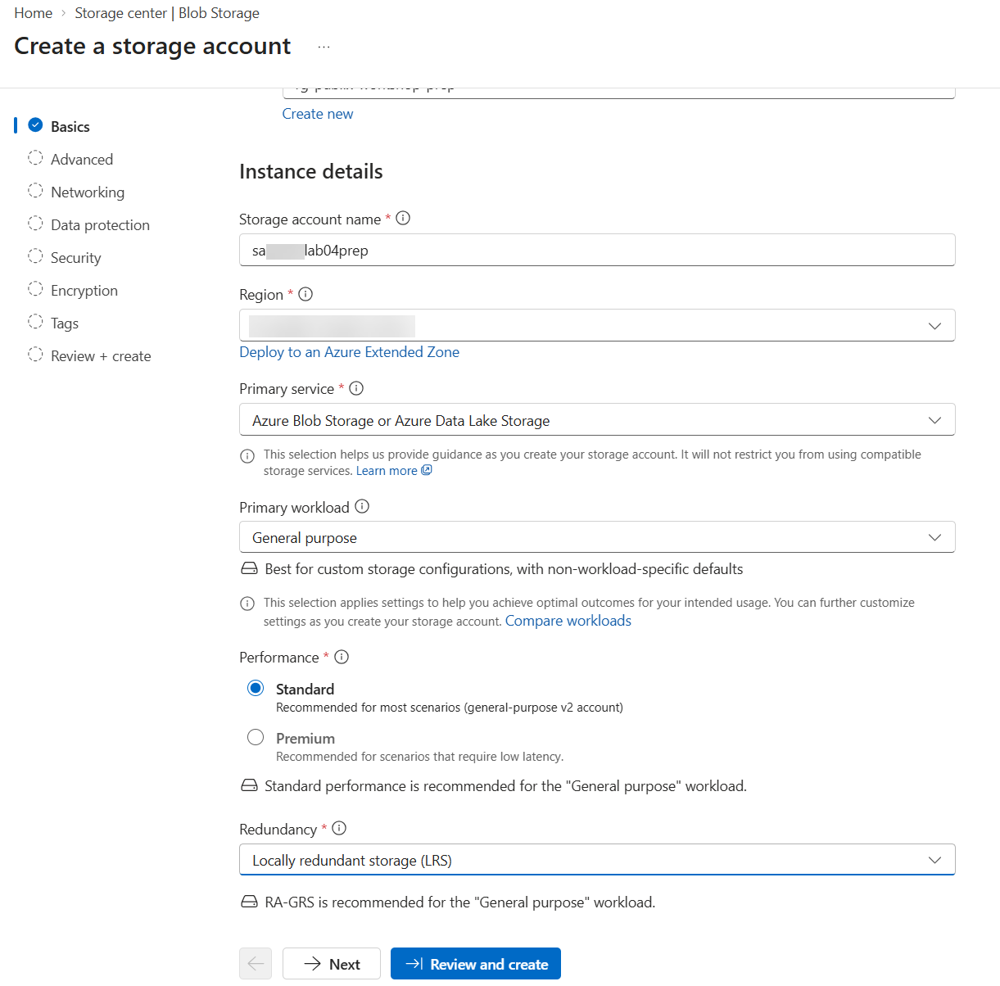
Step 1: Configure the storage account basics. Use your own unique account name, subscription, resource group, and region. View screenshot
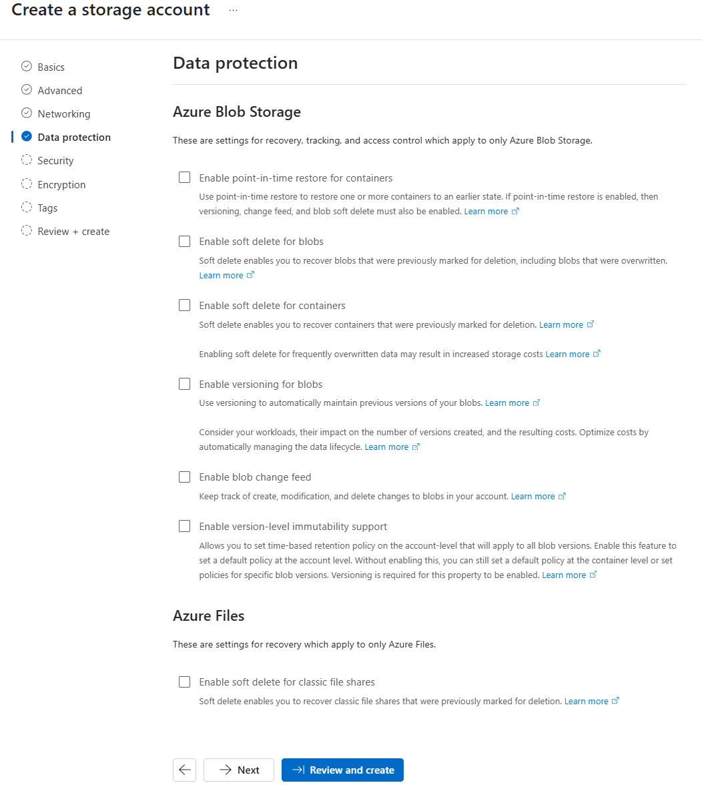
Step 1: Review Data protection before selecting Review and create. The unchecked options shown are example lab settings, not requirements; retain any settings required by your organization. - Create private blob containers named incoming and audit.
View screenshot
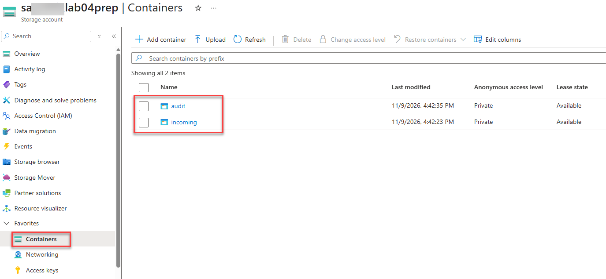
Step 2: Confirm that both incoming and audit exist and their anonymous access level is Private. - In the Azure portal, search for Logic apps and select Add. Create a Consumption logic app named
la-blob-events-<suffix>in the same subscription and resource group as your storage account. Select your lab region, then select Review + create > Create. When deployment completes, select Go to resource. - For Blob connector managed identity authentication, open Settings > Identity in the logic app. On the System assigned tab, set Status to On, select Save, and confirm.
View screenshot
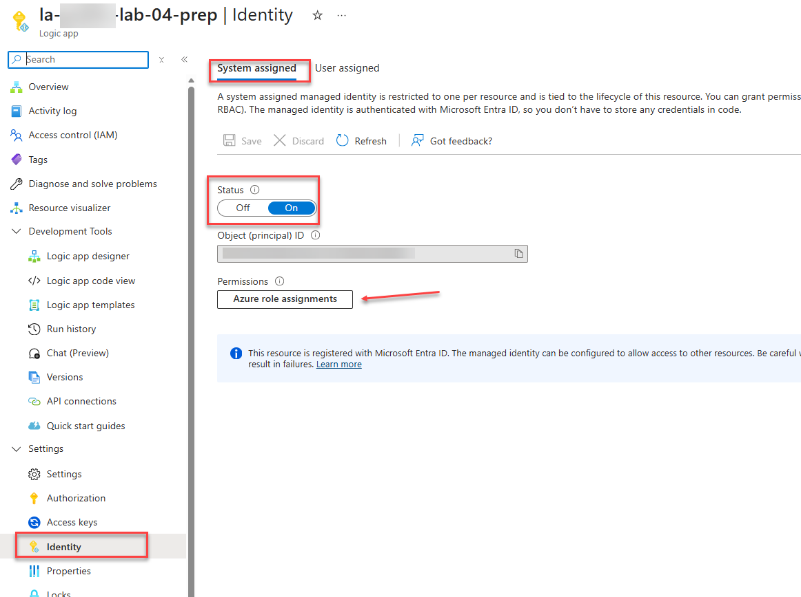
Step 4: Enable the logic app's system-assigned identity, then open Azure role assignments. - Select Azure role assignments > Add role assignment. Set Scope to Storage, select your subscription and lab storage account as the Resource, choose Storage Blob Data Contributor, and select Save. You need permission to assign roles at the selected scope; ask your administrator if this is unavailable.
View screenshot
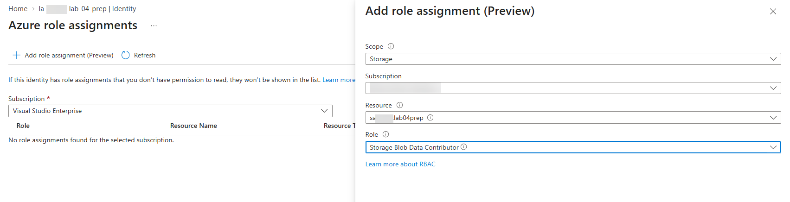
Step 5: Grant the logic app identity Storage Blob Data Contributor on the lab storage account. - Select Refresh and confirm that the role assignment lists your storage account and logic app identity. Allow several minutes for permissions to take effect.
View screenshot
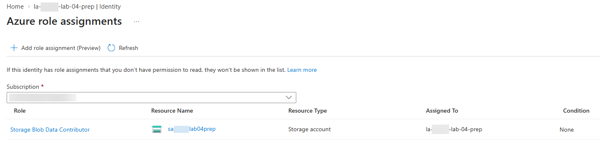
Step 6: Confirm the Storage Blob Data Contributor assignment lists your storage account and logic app identity before using managed identity in the Blob connector. Identifying values are redacted in this example.
Build the Event Workflow
Link Event Grid to the Logic App
- Open your newly created logic app. Under Development Tools, select Logic app designer. Start with a blank workflow if prompted.
- Select Add a trigger, search for Azure Event Grid, and choose When a resource event occurs. Do not choose an HTTP request or Blob Storage polling trigger.
View screenshot
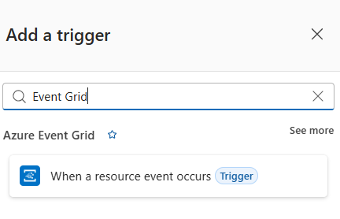
Step 2: Select When a resource event occurs under Azure Event Grid. - If prompted to create an Event Grid connection, select OAuth, confirm the Microsoft Entra tenant for your subscription, and select Sign in. Use an account authorized to create Event Grid event subscriptions on the source storage account. This Event Grid connection is separate from the Blob Storage connection used later.
- In the trigger parameters, select your storage account's Subscription, set Resource Type to Microsoft.Storage.StorageAccounts, and set Resource Name to your lab storage account, not the logic app or a container.
- For the event type, select Microsoft.Storage.BlobCreated. Under Advanced parameters, add Prefix Filter and enter
/blobServices/default/containers/incoming/.View screenshot
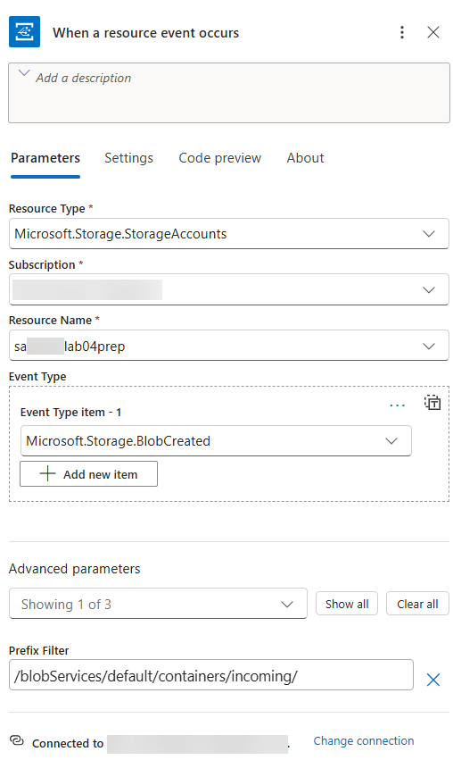
Step 5: Confirm your storage account, BlobCreated event type, and incoming container prefix before saving. Identifying values are redacted in this example. - Select Save on the designer toolbar. Azure creates the Event Grid event subscription that delivers matching storage events to this workflow.
- To verify the link, open your storage account in another portal tab and select Events > Event Subscriptions. Select Refresh and find the event subscription created by the trigger. Confirm that Provisioning state is Succeeded and the event type is Microsoft.Storage.BlobCreated. Open the subscription to confirm the full subject prefix is
/blobServices/default/containers/incoming/; the list can truncate it. WebHook is the expected endpoint type because Event Grid delivers events to the Logic App trigger's HTTPS callback endpoint. Return to the logic app designer. Do not upload a test file until you have added and saved the actions below.View screenshot
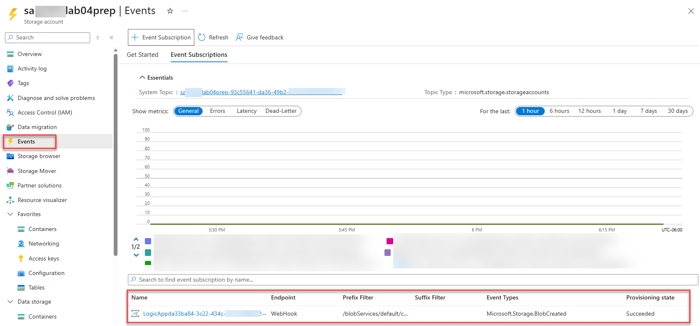
Step 7: Confirm the generated event subscription under Storage account > Events > Event Subscriptions. WebHook is correct for this trigger; Succeeded confirms provisioning, not delivery of a test event.
Add the Audit Actions
- Below the Event Grid trigger, add a Compose action named Audit record and build the JSON object below. Use trigger dynamic content for the event fields where available.
Audit record
{ "eventId": "@{triggerBody()?['id']}", "eventType": "@{triggerBody()?['eventType']}", "subject": "@{triggerBody()?['subject']}", "blobUrl": "@{triggerBody()?['data']?['url']}", "receivedUtc": "@{utcNow()}", "workflowRunId": "@{workflow()?['run']?['name']}" }View screenshot
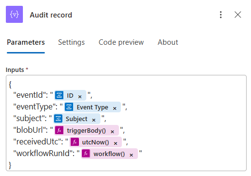
Step 1: Build the Audit record object in Compose Inputs. The expression tokens abbreviate their contents; verify the full expressions against the JSON example above. In the expression editor, omit the leading @ and interpolation braces. - Add Azure Blob Storage Create blob (V2) below Audit record.
View screenshot
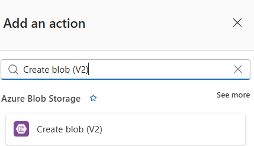
Step 2: Select Create blob (V2) under Azure Blob Storage. Create the connection as in Lab 02. Enter a connection name, select Logic Apps Managed Identity as the authentication type when available and authorized, and select Create new. If managed identity is unavailable, use an access key only as the temporary lab fallback.
View screenshot
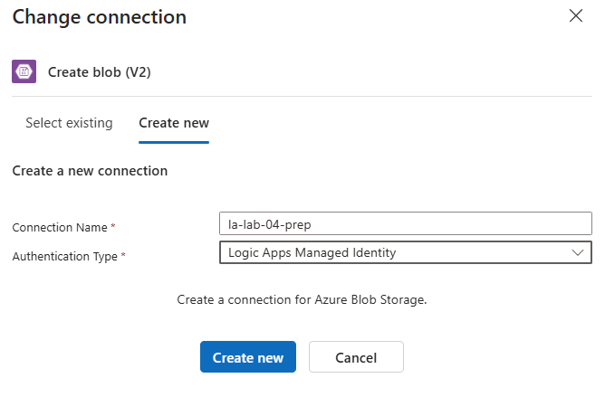
Step 2: Create the Blob Storage connection using the managed identity enabled during preparation. This is separate from the Event Grid OAuth connection. In Storage account name or blob endpoint, select your lab storage account or enter its blob endpoint, such as
https://<storage-account-name>.blob.core.windows.net. Set Folder path to/audit, and use the blob name and content expressions below. When shown, confirm Managed identity is System-assigned managed identity.Blob values
Folder path: /audit Blob name: @concat('event-', triggerBody()?['id'], '.json') Blob content: @string(outputs('Audit_record'))View screenshot
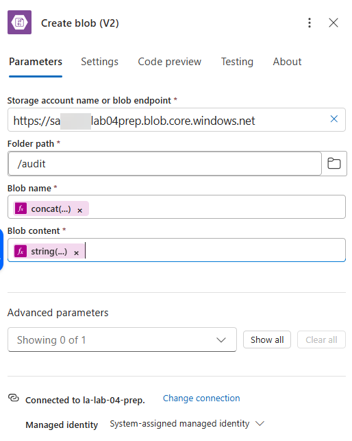
Step 2: Select your own storage endpoint, write to /audit, and verify the full concat and string expressions against the values above. In the expression editor, omit the leading @. - Confirm the workflow contains When a resource event occurs, Audit record, and Create blob (V2) in that order, then save the workflow. If your designer shows Publish, select it to make your draft changes live before testing.
View screenshot
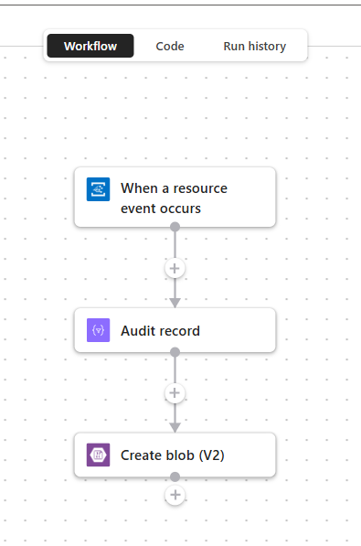
Step 3: Confirm the trigger and audit actions appear in this order before saving or publishing and testing the workflow.
Connector output shape
If your trigger exposes the Event Grid event as an array or uses different dynamic-content tokens, select the values from the designer and inspect the first trigger output in run history. Do not guess property nesting in production workflows.
Test the Event
- Upload a small text file named
order-1001.txtto incoming. - Wait for the workflow run, then open run history and inspect the trigger body.
- Open the audit container and inspect the generated JSON blob.
- Upload a file directly to audit and confirm that no new workflow run starts.
- The audit record identifies the source blob URL and event ID.
- Exactly one run occurs for the upload to incoming.
- No loop occurs when the workflow creates the audit blob.
Troubleshooting
| Symptom | Check |
|---|---|
| No run starts | Open the storage account Event Grid subscription and check provisioning status, event type, and subject prefix. |
| Repeated runs occur | Narrow the subject prefix to incoming and verify the output action writes only to audit. |
| Audit action is unauthorized | Confirm connector authentication and the identity's data-plane role assignment. |
Cleanup and References
Delete the Event Grid subscription before deleting the logic app, then delete storage data and the resource group when no longer needed.